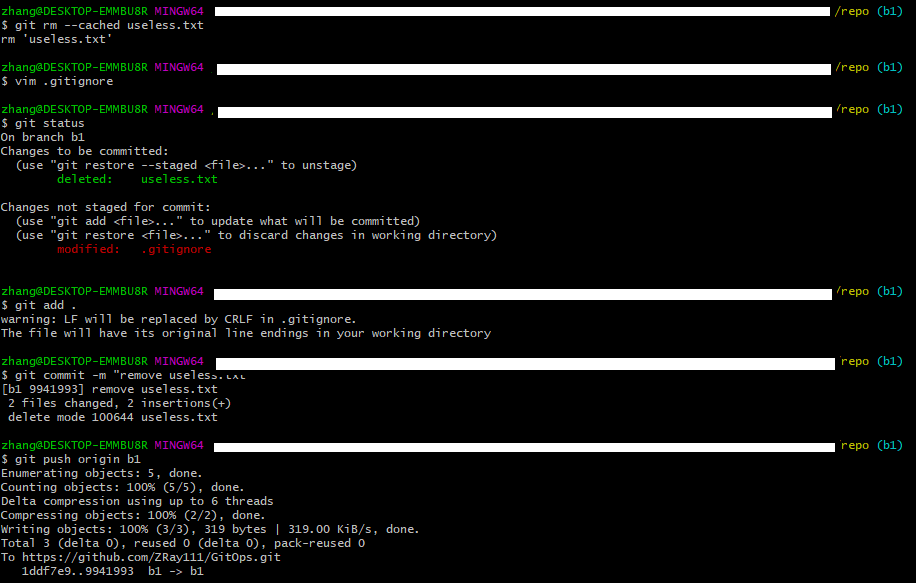

git笔记
git笔记
学习并记录git的常用操作。
目录
II. 基本操作
III. 进阶操作
IV. 多人协作专题
V. 报错信息处理
I. 本文常用语
- 仓库 (repository): 代码项目
- 本地仓库 (local repository): 本地代码项目副本，常用于进行代码编辑。
- 线上/远端仓库 (remote repository): 本地代码项目的线上托管版本，常用于代码协作、同步、备份等。最常见的代码托管网址即Github。
- 分支 (branch): 同一项目的不同版本，每个项目可以有多个分支，但是主分支只有一个且必须有一个，通常命名为main或者master。
- 推送 (push)
- 下拉 (pull)
II. 基本操作
1. 创建本地仓库
Create a new local repository.
git init
git add .
git commit -m "init commit"
注意事项：
git add .会添加当前目录下所有未被.gitignore排除的文件/文件夹。推荐新建项目的时候顺便新建一个README.md和一个.gitignore。git add *可以单独添加某个文件/文件夹，例如git add README.md。
2. 创建本地仓库并推送 (初始化) 到线上仓库的主分支
Create a new local repository and push it to the main branch of a remote repository.
git init
git add .
git commit -m "init commit"
git branch -M main
git remote add origin https://github.com/ZRay111/GitOps.git
git push -u origin main
注意事项：
git push的-u参数其实就相当于记录了push到远端分支的默认值，这样当下次我们还想要继续push的这个远端分支的时候推送命令就可以简写成git push即可。git branch -m <branch>和git branch -M <branch>是用来移动和重命名分支的，两者在功能上略有区别。
3. 推送既有本地仓库到线上仓库的主分支
Push an existing repository to the main branch of a remote repository.
git remote add origin https://github.com/ZRay111/GitOps.git
git branch -M main
git push -u origin main
4. 在本地仓库新建一个分支并推送到线上仓库的新分支
git branch # 查看本地分支列表
git branch b1 # 从当前分支创建名为b1的新分支
git checkout b1 # 从当前分支切换到分支b1
* # 在分支b1做出一些修改
git add .
git commit -m "init branch b1"
git remote add origin https://github.com/ZRay111/GitOps.git # 可选操作
git push origin b1:b1 # 在线上仓库创建新分支b1并推送本地分支b1到线上分支b1
注意事项：
git branch <branch>创建新分支时，新分支的初始化内容是当前分支的副本，因此在不同的分支创建新分支，新分支的内容有所不同。git branch <branch>和git checkout <branch>可以合并为一步git checkout -b neo。
5. 从跟踪清单中删除某个文件
git rm --cached <file>
注意事项：
- 此操作不会删除本地文件，经过一次推送会从线上仓库删除相应的文件。
- 本操作常用场景：错误地把一些文件加入到追踪清单时，比如模型参数文件，log文件等；记得在本操作后及时更新
.gitignore。

Fig. I-5. 从跟踪清单中删除某个文件
III. 进阶操作
IV. 多人协作专题
V. 报错信息处理
1. 没有写入权限
- 排查是否切换到正确的账号/用户。
git笔记
https://zray111.github.io/2022/10/09/git笔记/